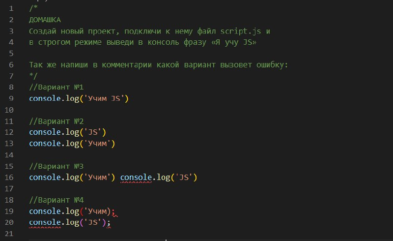

Завдання №1. Структура кода. Інструкції. Режим use strict.

- Помилки не буде.
- Помилки не буде. Кожна з інструкцій написана з нового рядка. Крапку з комою ми можемо не писати, але може виникнути помилка під час стискання файлу JS певним збирачем.
- Буде помилка. В даному випадку інструкції потрібно розділити комою, або крапкою з комою. Така помилка може виникнути на прикладі який описаний в другому варіанті. Тому, краще писати з нового рядка закриваючи все.
- Все що відкрито, повинно бути закрито. Помилка в першій інструкції - пропущено закриваючу одинарну лапку.
Завдання №2. Змінні в JAVASCRIPT. Константи. Загальні слова LET CONST VAR.
- Не вірно. Змінні потрібно розділити крапкою з комою, або другу змінну перенести на новий рядок.
- Помилки не буде, але краще застосувати стиль lowerCamelCase : let myAge = 36;
- Помилки не буде, але ті імена констант значення яких присвоюється в ході виконання програми можна записати як і імена змінних.
- Вірно. Імена тих констант які відомі завчасно, прийнято записувати верхнім регістром розділяючи слова нижнім підкреслення.
- Вірно. Відмінність var від let та const. З блоком умови (if) ми можемо об'явити зміну var і вона буде показана за межами блоку і помилки не викличе.
Завдання №3. Типи данних JAVASCRIPT. Null String Undefined Boolean Number та інші.
- Помилки не буде, але якщо нам потрібно в рядку вивести змінну, тоді необхідно використовувати зворотні лапки.
- Не вірно. Значення NaN застосовується якщо є обчислювальна помилка. В даному випадку на нуль ділити ми можемо. Результатом ділення буде числове значення Infinity.
- Не вірно. Змінна є невизначеною, тому тип даних в неї undefined. Тип даних Null визначається змінною, але її значення буде дорівнювати "порожнечі".
- Вірно. Це автоматичне перетворення яке можливе без спеціальної функції.